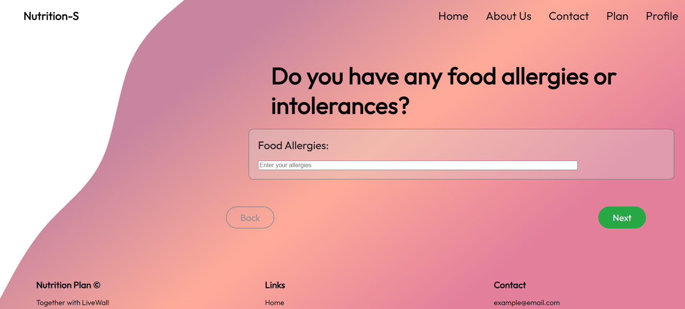
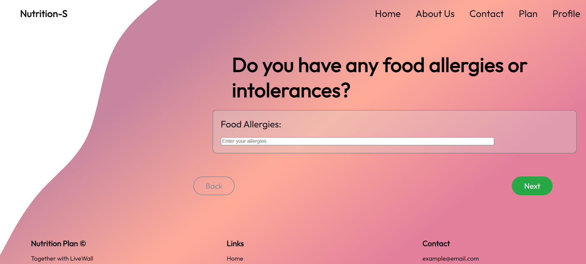

Overall, I think it was very productive Semester, in every field possible. Starting the semester I wasn't so confident in my coding skills, now I have improved gradually in it,
learned a lot of new stuff, like web applications and databases, fixed my gitlab and overally improved in that sphere. I also improved in my design skills, the teacher also mentioned
it to me during one of the talks where he said that the structure of the designs that I make have significantly improved from what I had before. I also think so myself, I started to
see the patterns and proffessional standard layouts on the website, I know how to properly position things on the website for a convinient usage and I also learned how to create pleasing
designs as well. Also, not to forget that I finally decided what is going my choice for my future carrier, which is game related field of 3d designer/developer, and I already started investing
a lot of my time in it and taking steps in order to be prepared for this future and become the best specialsit in this field as I can. And last, but the least, I improved a lot as a person and
proffesional, I become much more opened to meet new people and get used to them, became more confident in presenting, learned how to deal with multi-cultural team, learned how to take
responsibility for leading the group and myself. So, in conclusion, I think it was a great Semester that improved me so much in every way possible, and, I think, I have managed to reach quite confident
proficient level in every Learning Outcome that we had. In the future, once I go to game design I want to improve my skills in 3d modelling field and find myslef a job in that field, because it is my
great passion to create models. As Henry Ford said "The best Job is well-paid Hobby." and I agree with, and that's why I want to find a work where I would be able to fullfill my passion and earn
money.


 
